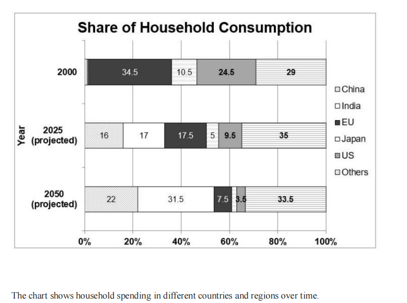

Article
Read the article, then confirm below to continue.
First Satellite Launch From the UK Failed to Make Orbit Due to an 'Anomaly'
What went wrong with Virgin Orbit's LauncherOne mission — and what it means for the UK's ambitions in space.
📄 Open articleComprehension & vocab
Questions on the article you just read, plus ten key words from it.
Comprehension
1. According to the article, what happened to Virgin Orbit's LauncherOne rocket about an hour into its flight?
2. According to the article, how many successful orbital launches did the US achieve in 2022?
3. According to the article, how many launches per year does the UK aim to achieve by around 2033?
4. According to the article, when did the UK previously make a successful orbital launch, before this attempt?
5. According to the article, which country ranked second in successful launches in 2022, behind the US?
6. According to the article, what type of aircraft carried the LauncherOne rocket into the air?
Vocabulary
Writing Task 1: the article
Background reading on global consumer spending shifts — study the highlighted language before you write.
■ subject synonyms ■ numerical language ■ useful Task 1 chunks
Global Macroeconomic Shifts: Structural Realignments in Long-Term Consumer Spending Distribution
The global economic architecture is undergoing a decisive rebalancing, characterized by the redistribution of global consumer expenditure power from developed Western economies toward emerging Asian markets. Longitudinal forecasting models extending across a half-century horizon indicate a profound contraction in the relative consumer market share held by traditional economic powerhouses, balanced by exponential domestic consumption growth in emerging industrial superpowers.
Developing economies in Asia represent the primary growth engine of global consumer demand. Rising disposable incomes, massive urbanization, and expanding middle-class demographics are projected to convert these economies from production-oriented exporters into the dominant regional hubs of private consumption.
The relative contribution of established Western consumer markets — notably Western Europe and North America — is undergoing a continuous long-term contraction. While absolute spending levels may remain stable, their proportional share of total global domestic consumption is diminishing due to lower population growth rates and mature consumer penetration. Advanced regional economies characterized by demographic aging and plateauing population figures exhibit a steadily shrinking footprint within global consumption aggregate models.
Meanwhile, the aggregate spending share across secondary developing economies and rest-of-world territories remains a significant and resilient block, reflecting broad-based macroeconomic development beyond major single-nation growth stories.
Task 1 report
Mini exam block — write your response with the stopwatch running.
The chart shows household spending in different countries and regions over time. Summarise the information by selecting and reporting the main features, and make comparisons where relevant. Write at least 150 words.

Sample answer
Model response, with useful comparison language marked.
The stacked bar chart shows the shares of global household consumption for six regions — China, India, the EU, Japan, the US, and Others — in 2000, with projections for 2025 and 2050.
Overall, while the EU, the US, and Japan are projected to experience a decline, developing regions — particularly India and China — are set to rise markedly. The EU, which initially led in 2000, is projected to be surpassed by the Others category in 2025 and become one of the smallest contributions by 2050.
The EU, which held the largest share at 34.5% in 2000, is expected to lose over three-quarters of its share by 2050, falling to 7.5%. Similarly, the US will decline from 24.5% to 3.5%, recording one of the most significant drops among developed economies. Japan's modest share of 10.5% is predicted to more than halve by 2025 (5%) and shrink further to 2% by 2050, making it the lowest figure.
By contrast, India is forecast to rise sharply — from around 0.2% in 2000 to 31.5% in 2050 — making it the second-largest consumer group. Similarly, China's share is projected to climb consistently to 22%, ranking third by the final year. Others accounted for 29% in 2000. It is projected to overtake the EU in 2025 (35%) and to remain the largest at 33.5% in 2050.
Reading Practice
Open the test in a new tab, complete it, then come back here.
Full Reading Test
40 questions across multiple passages. Complete whichever section your teacher assigns.
📖 Open reading passageSpeaking Part 2 & 3
Choose a topic set below. You only get one attempt per question, so make sure you're ready before you start recording.
Video & comprehension
Watch, then answer the questions below.
1. According to the video, what controls every aspect of how humans function?
2. What happened to people who participated in experiments in caves in the 1960s?
3. What can a lack of sunlight do to the immune system?
4. What is the main function of the circadian clock mentioned in the video?
5. Which type of light has the strongest impact on the body's clock?
6. Why can artificial light be harmful to our body clock?
7. What can happen when the body's systems become desynchronised?
8. According to the video, what effect can bright morning light have on mood?
9. How does the skin respond to sunlight?
10. What does the speaker recommend doing every day, even when it is cold?
Gap Fill
Word box: sunlight · depression · immune · circadian · melatonin · artificial · alert · desynchronise · diabetes · cardiovascular · mood · wellbeing · vitamin D · exposure · hermits
1. In winter, people are exposed to much less .
2. A lack of sunlight can affect the system and its ability to defend the body.
3. People living without sunlight in caves experienced severe mood disturbances and .
4. The body's clock controls the timing of our physiology and behaviour.
5. Blue light is detected by special cells in the eyes that signal the body about the time of day.
6. light can give the body an incorrect time cue.
7. Artificial light may make people feel more at night.
8. When the body's systems become , the risk of certain health problems can increase.
9. The video mentions increased risks of and obesity when the body's systems are out of sync.
10. Another health condition associated with this disruption is disease.
11. Bright sunshine can have a significant effect on elevating .
12. Sunlight exposure is also associated with general feelings of .
13. When the skin is exposed to sunlight, it starts producing .
14. The speaker recommends daily light to strengthen the circadian clock.
15. Without enough outdoor light, modern people can become more like living in caves.
Vocabulary Matching
Day 13 complete! 🎉
All 8 tasks done. Come back tomorrow for the next day.